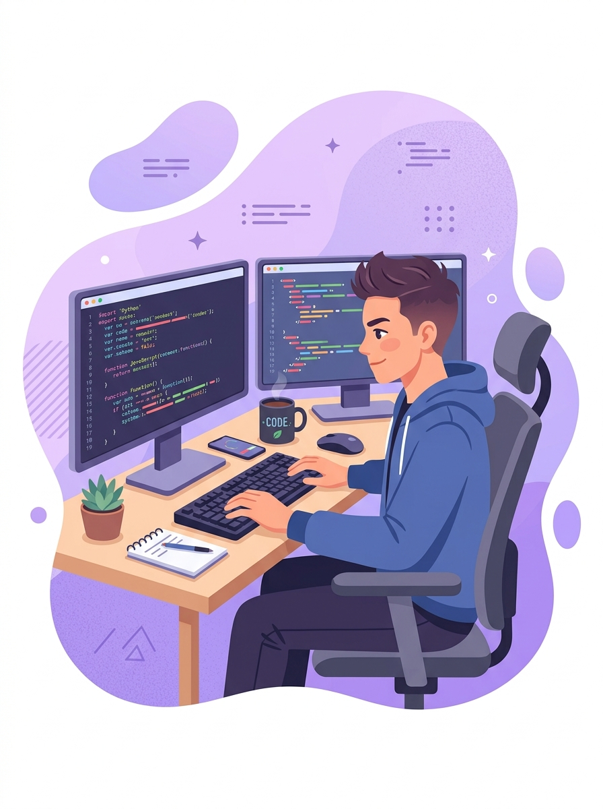

¡Te damos la bienvenida!
Gracias por estar aquí. Este blog fue creado por estudiantes de Ingeniería en Software de ITSON pensando en ti, que estás por elegir tu carrera universitaria.
Este blog trata del ciclo de vida del software, los roles de un equipo de desarrollo y todo lo que implica la carrera de Ingeniería en Software en ITSON.
Aquí encontrarás información clara, actividades interactivas y experiencias reales para descubrir tu vocación y construir el futuro que imaginas.
Te acompañamos en tu camino. Tu lugar en software ✨Roles del equipo
Descubre si encajas mejor como analista, tester, programador o líder.
Conocer rolesPlan de estudios 2023
Consulta las materias por semestre y requisitos de titulación en ITSON.
Ver plan 2023Comunidad y contacto
Lee experiencias de egresados y envía tus preguntas al equipo.
Escribir al equipo